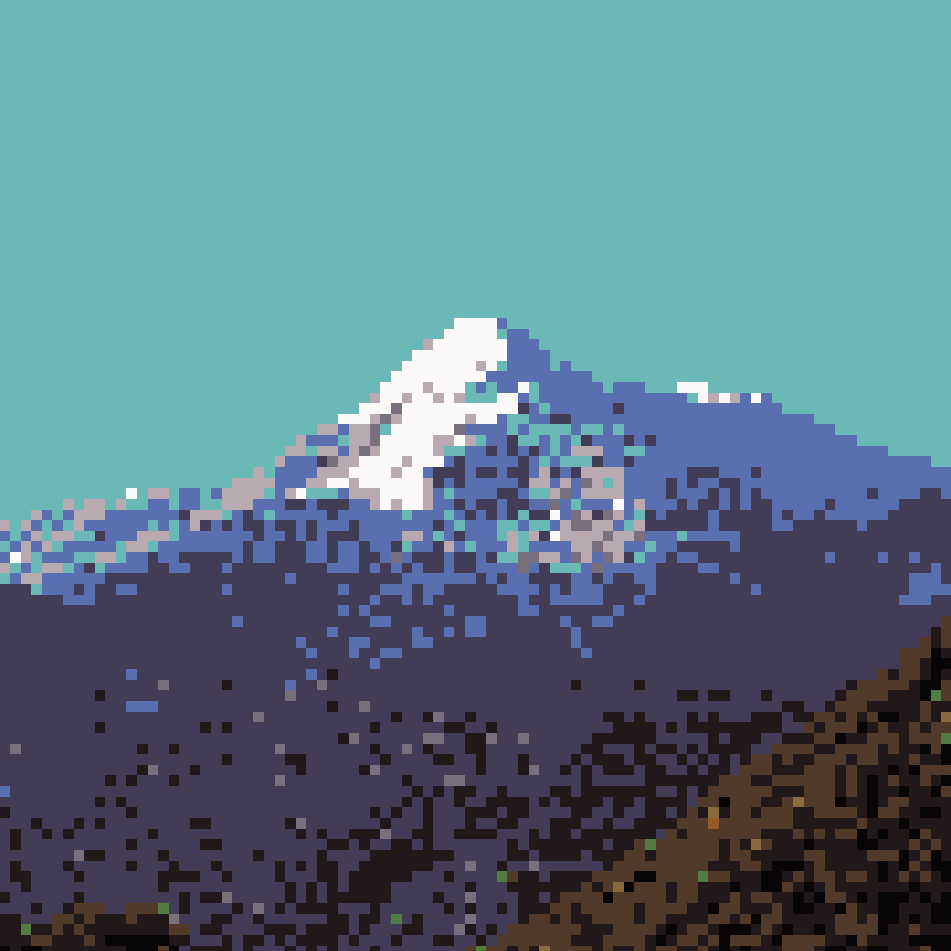
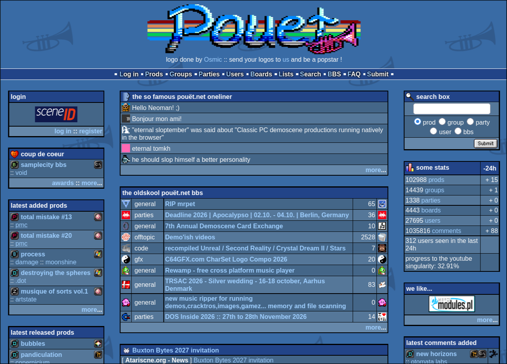
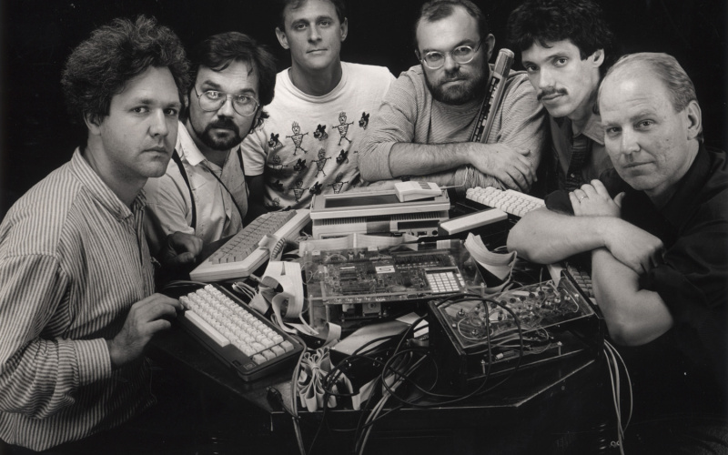
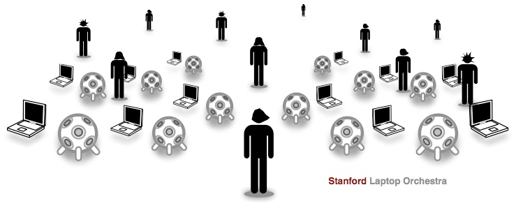
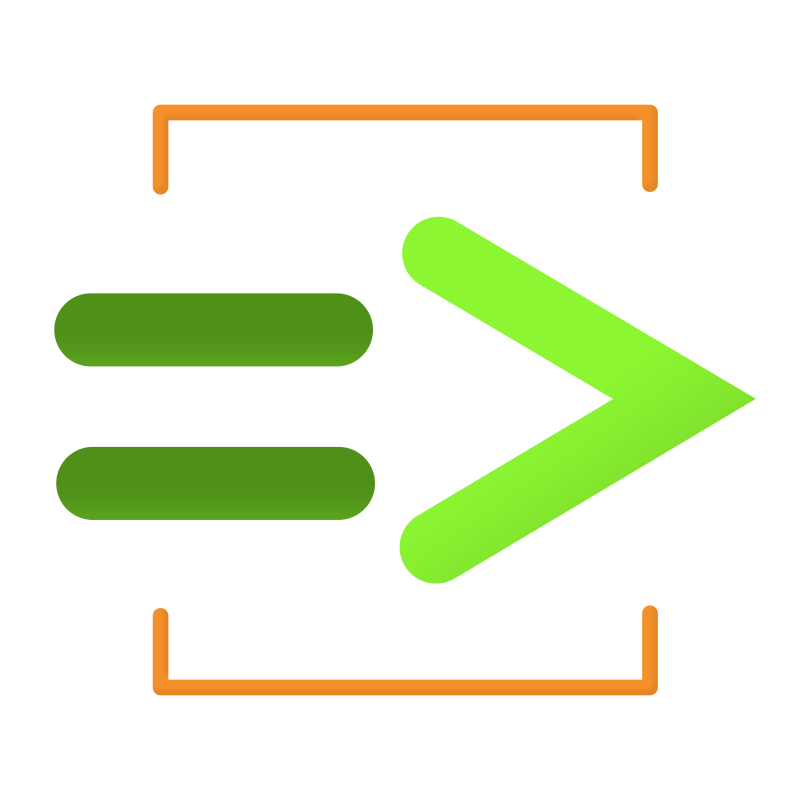
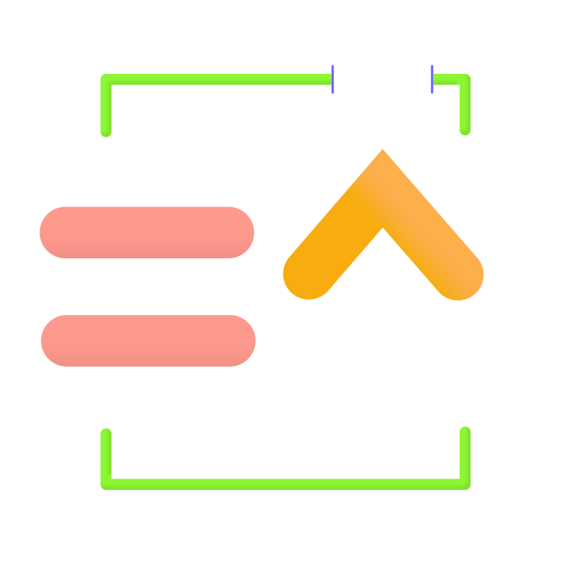

Vivre Dangereusement
Pourquoi live-coder sa musique ou ses visuels ?
Au programme
- Quoi / pourquoi le live-coding ?
- Différents outils
- Mon Setup / Ma pratique
- Workshop (Cagire)

Quoi / pourquoi le live-coding ?
Vidéo Algorave
Acte performatif
- Programmation en temps-réel
- Improvisation
Pratique engagée
- F/LOSS art
- Transparence, éthique
- Culture hacker, lien avec les hackerspaces
Culture et Historique du live-coding




Le live-coding dans les choses académiques / universitaires :
- Computer Music Ensembles
- Network music
- Electronic Music Pedagogy
- Prototyping
Environments

entre crochets">
? Visuels ?
Des citations [mode pro]
“We are witnessing the formation of a new type of oral culture (or rather aural culture), with improvisation and live coding on new instruments, one that is established through electronic media of audiovisual documentation. This is a culture where the text, picture, video, tweet, Snapchat pic, Instagram (what an appropriate name!) is speedily disseminated, but without being carefully composed, thoughtfully consumed, or achieved.”
“Ron Kuivila programmed an Apple II computer onstage to create dense, whirling, metric sounds that layered in and folded over each other. Considering the equipment used, the sounds were often surprisingly gigantic in scale. Kuivila had trouble controlling the piece due to system problems. […] The reality is that personalized homegrown hardware and software, for all the freedom of expression they can afford, are especially subject to flakiness.”
“I use the UNIX shell because I think in text. It’s fast, there’s a beautiful relationship between data and code, and it’s easy to recall and modify past actions – you don’t have to repeat yourself all the time like with GUIs. When interactive commandline shells were first developed they were called “conversational languages,” part of a field of research called “conversational computing.” It’s a shame that this terminology fell out of use.”
“Live coding is not about tools. Algorithms are thoughts. Chainsaws are tools. That's why algorithms are sometimes harder to notice than chainsaws.”
“For a long time computer scientists have been erasing time from programming, and we're now putting it back in. For a long time computer musicians have been trying to hide the computation in their music, and we're celebrating it.”
“The boundary between a piece and an instrument is deliberately vague, and it can fluctuate. […] The instrument incorporates notational elements, but conversely the notational is becoming increasingly instrumental and systematic.”
“Il se dessine alors une pratique musicale du futur qui n’attend plus le développement d’instruments de musique d’un type nouveau, mais s’empare d’instruments qui n’ont pas été spécialement construits pour la musique. Et c’est justement à cause de leur utilisation musicale limitée, idéologiquement restreinte, qu’ils deviennent pertinents pour la musique - ainsi que les disques, magnétophones, radios et autres appareils de valeur apparemment uniquement technique, qui ne font que reproduire des sons.”
Des Hybridations
Mon Setup / Ma pratique
Cagire
Raphaël Forment

Thèse : « Some thoughts have a certain sound » : esthétiques et techniques du live coding en musique (2025)
C'est quoi Cagire ?
Une sorte de séquenceur pas à pas dans lequel on peut écrire du code.
- Ça ressemble à un séquenceur, mais chaque pas contient un script au lieu d'un simple évènement.
- Ces programmes peuvent être génératifs / aléatoires et définir leur propre logique, ou toucher à l'intégrité même du séquenceur et de l'environnement de jeu.
- Tout tient dans un seul exécutable/programme : synthétiseurs, sampleur, effets, une documentation, un dictionnaire, un enregistreur, etc etc
Le langage
- Les programmes sont écrits dans un langage similaire à Forth, qui, ici, est repensé pour le live coding musical.
- Un programme est une ligne de mots, lue de gauche à droite. Cela peut porter à confusion tout est un peu "à l'envers" mais on s'y fait vite.
- Chaque mot prend ce dont il a besoin sur une pile et y laisse son résultat. Seul les espaces permettent de séparer des valeurs/fonctions/séparateurs.
- Il y a des mots pour les fréquences, les rythmes, les intensités et le timbre, et des mots pour le hasard, les séquences et les patterns. Et tous les mots sont trouvables dans ce grand dictionnaire.
Un pas définit un programme :
saw sound
< c4 eb3 g3 > note
[ .5 .8 ] choose gain
( 8 crush ) sometimes
0.5 decay
.